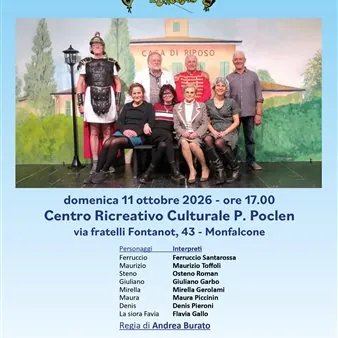

dom 11 ott · dalle 17:00
Pochi ma boni
Il Fogolâr Furlan Monfalcone in collaborazione con il Comune di Monfalcone, il Comitato Rione Centro Monfalcone, l'Ente Friuli nel Mondo, l'Associazione Ponti d’Europa e la Compagnia teatrale Stropula Cantieri Teatrali Aps presentano la commedia dialettale in due atti "Pochi ma…
 Indicazioni
Indicazioni
- Costi e prenotazioni
- Costo non indicato · Prenotazione non indicata
- Programma
- Programma da verificare. Apri la fonte ufficiale per orari e possibili aggiornamenti.
- In caso di maltempo
- Nessuna indicazione specifica pubblicata.
- Note
- Acquisito automaticamente dalla fonte.
L’EVENTO
Descrizione completa
Il Fogolâr Furlan Monfalcone in collaborazione con il Comune di Monfalcone, il Comitato Rione Centro Monfalcone, l'Ente Friuli nel Mondo, l'Associazione Ponti d’Europa e la Compagnia teatrale Stropula Cantieri Teatrali Aps presentano la commedia dialettale in due atti "Pochi ma boni" di Loredana Cont.
Lo spettacolo si svolgerà domenica 11 ottobre 2026 alle ore 17.00 presso il Centro Ricreativo Culturale “Piero Poclen”, in via Fratelli Fontanot 43 a Monfalcone.
Sul palco, la compagnia teatrale “Il Teatrozzo” di Pasiano di Pordenone.
Regia di Andrea Burato.
Realtà e finzione spesso coincidono: ed è proprio ciò che accade in questa avvincente commedia in due atti di Loredana Cont, che presenta uno spaccato del mondo del teatro amatoriale, raccontanto la passione, l’entusiasmo, le ambizioni e le paure che spesso attanagliano tutti gli artisti amatoriali, ma che li esaltano al momento di andare in scena. Le motivazioni possono essere diverse, come l'ansia di regalare al pubblico un'ottima performance e trasmettere emozioni vere, l’opportunità di vestire i panni di qualcun altro o, semplicemente, la volontà di divertirsi in buona compagnia. I protagonisti della commedia sono alcuni pensionati molto attivi e intraprendenti iscritti a un Circolo Pensionati, che tentano di fondare una nuova filodrammatica per “rinverdire i fasti del passato”. I temi principali dell'opera sono la socialità, l'importanza di sentirsi attivi e uniti nella terza età, l'amore per il teatro amatoriale, che supera ogni barriera d'età, e la costante presenza dell'ironia. Alle risate si alternano momenti di nostalgia e cruda realtà.
Lo spettacolo rientra nel ciclo dedicato al teatro regionale, dialettale e amatoriale.
Ingresso con offerta libera.
Le offerte saranno interamente devolute per l'attuazione di un corso di formazione per l'utilizzo del defibrillatore organizzato dal Comitato di Monfalcone della Croce Rossa Italiana, con rilascio di relativa certificazione. Il corso si terrà sabato 17 ottobre 2026 a Monfalcone. Maggiori informazioni sulle modalità d'iscrizione e ulteriori dettagli verranno forniti con un comunicato ad hoc.
IL PROGRAMMA
Programma e orari
Appuntamenti raccolti dalle fonti elencate. Dove manca un orario, non è ancora disponibile in questa scheda.
Programma pubblicato
- Dal 2026-10-11 al 2026-10-11
INFORMAZIONI UTILI
Prima di partire
- Controllare la fonte prima di partire.
ORGANIZZAZIONE